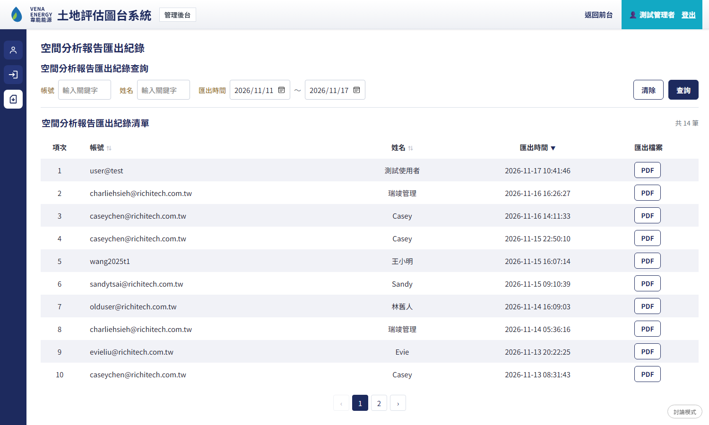
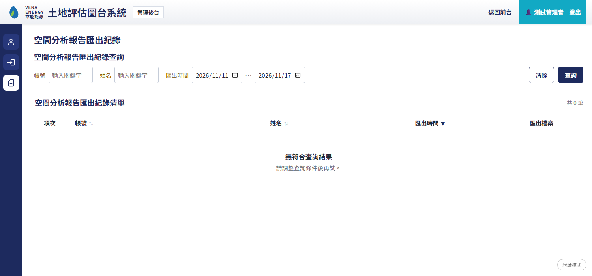
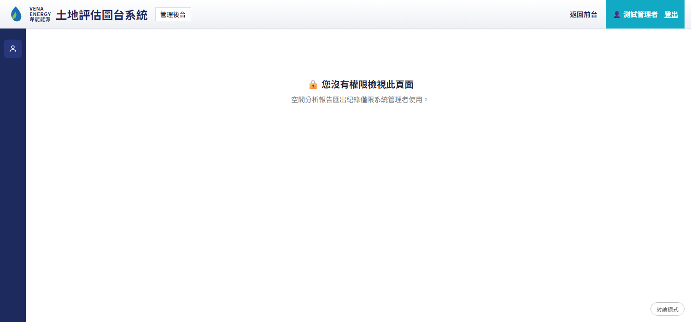

土地評估圖台系統・管理後台｜依雛型 v1、規格 v1｜對應合約項次 3.2
圖/。配色、字體、元件樣式沿用現有後台「帳號管理」頁，也與「登入紀錄」頁一致（深藍左側列、青藍使用者標籤、深藍主按鈕、白底藍框次要按鈕、隔行底色表格），不需要新設計一套。另有 Design 畫布 可直接開啟，每個畫面與狀態一個 frame。| # | 畫面 | 說明 |
|---|---|---|
| 1 | 空間分析報告匯出紀錄頁（有資料） | 查詢條件列、紀錄表格（含每列「PDF」按鈕；超過 1 年的列改顯示「-」）、分頁 |
| 2 | 空間分析報告匯出紀錄頁（無符合查詢結果） | 表格區的空狀態 |
| 3 | 空間分析報告匯出紀錄頁（無權限） | 非系統管理者直接進網址的提示頁 |
| 4 | 左側選單新增按鈕「空間分析報告匯出紀錄」 | 與「帳號管理」「登入紀錄」按鈕同尺寸，圖示已指定：Material Icons Outlined 的 sim_card_download（24px），滑鼠移上顯示提示文字「空間分析報告匯出紀錄」 |
待設計交付的素材：「空間分析報告匯出紀錄」按鈕的 sim_card_download 圖示（含目前頁的白底狀態與一般狀態），以及滑鼠移上的提示文字樣式；表格內「匯出」按鈕沿用現有白底藍框小按鈕樣式，不需新設計。

yyyy-MM-dd HH:mm:ss（例如 2026-10-22 14:20:41）。
| 情境 | 畫面表現 |
|---|---|
| 查詢後無符合資料 | 表格區置中顯示粗體「無符合查詢結果」＋灰字「請調整查詢條件後再試。」；右上「共 0 筆」；不顯示分頁 |
| 系統尚無任何紀錄 | 同上，灰字同樣是「請調整查詢條件後再試。」 |

| 情境 | 畫面表現 |
|---|---|
| 匯出時間超過 1 年的紀錄（以匯出日期起算，1 年後同月同日當天仍顯示按鈕，隔天起改顯示；逾期 PDF 由系統自動刪除） | 紀錄照常顯示（帳號、姓名、匯出時間都在，計入「共 N 筆」）；「匯出檔案」欄不顯示按鈕，改顯示淡色「-」，不可點擊，靠左對齊；滑鼠移上提示「PDF 已超過 1 年保存期限，後台不提供匯出」 |
Design 畫布有「逾 1 年的紀錄」這個 frame 可對照。
| 情境 | 畫面表現 |
|---|---|
| 起日晚於迄日按「查詢」 | 條件列下方出現紅字「匯出時間的起日不可晚於迄日」，清單維持原狀；修正後再按查詢，訊息消失 |
此狀態雛型為純文字紅字，請設計出符合現有後台風格的錯誤提示樣式（可出圖也可口頭回覆沿用現有表單錯誤樣式），與登入紀錄頁用同一種。